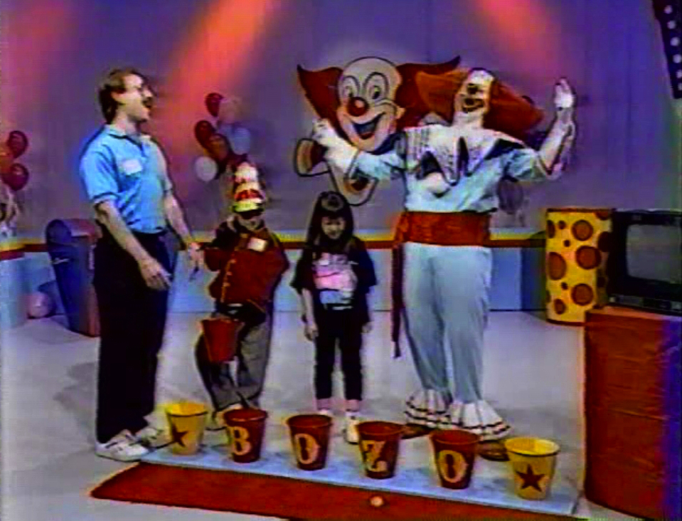

The Array vs. The Hash
1/19/2016
Arrays and Hashes are both collections used to store and retrieve data. Collections allow a user to save data in an organized manner. Without collections, there would be absolute chaos.
This blog post focuses on the different uses for arrays and hashes. While syntax is very important, there are plenty of easy ways to learn how to create, edit, and sort through these collections. This post should be used as an overview of the array and hash. For more information on syntax, please check the resources links at the bottom of the page!
The Array
First, arrays! Arrays are an amazing way to organize data in numerical order. Starting at zero and moving on towards infinity, arrays values are stored in relation to a numerical value. Imagine a line of bozo buckets, the first bucket as 0, the second as 1, the third as 2, and so on. In each bucket is a different colored bean bag. In this example, we have an array of multi-colored bean bags.
Wow, that clown is creepy.
Let's look at a more real life (less creepy) example of how you could utilize an array. Say you are trying to keep track of a list of 20 or so friends. You want a way to print out these twenty friend's names every week in order to remember who to invite to your weekly book club. You could, theoretically, just create a list of names in a string that print out.
Code
friend1 = "Lucy Smith"
friend2 = "John Carol"
friend3 = "Brendan Sweeney"
friend4 = "Joy Lin"
...
puts friend1
puts friend2
puts friend3
puts friend4
Output
Lucy Smith
John Carol
Brendan Sweeney
Joy Lin
This is a pretty terrible solution to this problem. There are a ton of variables, and way too many lines of code. Plus, there is no easy way to sort through and edit your friend group. What if your friend Lucy Smith moves away, and you need to take her off the book club indefinitely? What if you met a new person in yoga class who promises they'll bring their cute dog to the next event, so you need to add them to the invite list? That's where arrays come in.
With an array, you'll be able to sort, edit, and add to your list of friends. You can add people, delete people, and arrange names alphabetically. It is a an easier way to organize your data. The code is more efficient. It is basically better in every imaginable way.
invite_list = ["Lucy Smith", "John Carol", "Brendan Sweeney", "Joy Lin", ...]
puts invite_list
Output
Lucy Smith
John Carol
Brendan Sweeney
Joy Lin
That's infinitely better! Only two lines, but the same output. Now you can delete Lucy and make sure the yoga friend is invited to your next soiree. You can even search through your new array of friends for specific names (Check resources below for syntax on how to do this). Again, arrays are ordered by number. Say you wanted to capture the first person from the list. You would access their name using invite_list[0]. At the moment, invite_list[0] would return Lucy Smith. If you wanted to access the second person, you would use invite_list[1] and find John Carol.
However handy they may be, arrays do have their limitations. Take the invite list example. While it is very useful to have a list of friends to invite to your book club, it would be even more useful to print out their name along with their email address. Is there a way to do this with arrays? Maybe, if you created an array of arrays or if you included the email with the string of their name. Would it work? Yes. Would it be messy? Double yes. There has to be an easier way to connect names with additional information. This is where hashes come in.
The Hash
Now we understand a bit about arrays, collections of ordered objects, let's take a look at the hash. Like arrays, hashes store information in an organized manner. Unlike arrays, hashes do not necessarily connect these objects to a numerical value. Hashes are a collection of objects, where each object is connected to a key. The key can be a number or a string. The value can be an object, or even a method.
Hash Example
supporting_characters = {
"Harry Potter" => "Hermione",
"Shrek" => "Donkey",
"Finding Nemo" => "Dory"
}
In the example above, the movies (Harry Potter, Shrek, Finding Nemo) are the keys and the supporting characters (Hermione, Donkey, Dory) are the values. You can search for supporting characters by movie. You can search for movie by supporting characters. Hashes are amazing!
Let's take a look at our invite list example for a better understanding. First, we have to create our hash.
Declare a hash of party information
party_info = {
"Lucy Smith" => "lsmith@gmail.com",
"John Carol" => "carolboy@gmail.com",
"Brendan Sweeney" => "bsweeney@yahoo.com",
"Joy Lin" => "me@joylin.com",
"Wine Bottles"=>10, "Start,
Time" => "6:00PM"
}
puts supporting_characters
puts supporting_characters.keys
puts supporting_characters.values
Output
{"Lucy Smith"=>"lsmith@gmail.com", "John Carol"=>"carolboy@gmail.com", "Brendan Sweeney"=>"bsweeney@yahoo.com", "Joy Lin"=>"me@joylin.com", "Wine Bottles"=>10, "Start Time" => "6:00PM"}
Lucy Smith
John Carol
Brendan Sweeney
Joy Lin
Wine Bottles
Start Time
lsmith@gmail.com
carolboy@gmail.com
bsweeney@yahoo.com
me@joylin.com
10
6:00PM
Now you have names and email! So handy. You can still sort, edit, and add to your hash. If you took a close look at that example, you'll see we also snuck some additional variables. From this hash, you can tell that at the last party you drank 10 bottles of wine and the start time was 6:00PM. (That's right, 10 is an integer! As we mentioned before, hashes can store anything!) These new additions are very useful. You could even write a small program to access this information at any time.
return party_info["Wine Bottles"]
return party_info["Start Time"]
The code above will return 10 and 6:00PM, the total number of bottles purchased and start time of your last book club so you know exactly how much wine to purchase and what invite time to send out! Can you imagine trying to do this with an array? There would be no way to link the information (10 bottles and 6:00PM) with any searchable value. This is why hashes are great.
The Real Difference between Arrays and Hashes
Both arrays and hashes are collections of objects. Arrays are organized numerically, while hashes are keys and values linked together. The real difference between arrays and hashes is that arrays are more like linear storage system while hashes are more like maps. Hashes are made of keys which point to values. It's a key to value map.
Additional Resources
I hope this overview helped you understand more about the differences between arrays and hashes! There is, of course, a lot more to learn - especially when it comes to syntax. For more info on how to use arrays and hashes, please check out the links below.